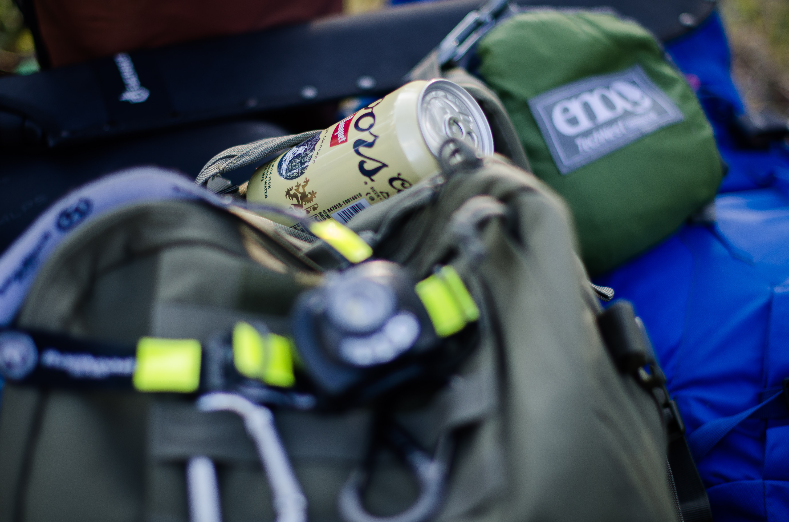

About Me
- I was born outside of Atlanta, Georgia, USA.
- I currently reside in the northern suburbs of Chicago, Illinois, USA.
- My current occupation is an electrician. I have been working in electrical for over 5 years.
- Not until recently did I find a passion for coding, even though I have been using and enjoying computers since a very young age.
Interests
- Listening to music.
- Playing music (mediocre guitar player).
- Photography and cinematography.
- Eating food! I love trying new places or revisiting old favorites.
- Outdoor activities: camping, fishing, hunting, hiking, exploring, rock climbing, etc. count me in!
- Sports! My favorite sport is football (or as some call soccer), but I am also a true admirer of martial arts/combat sports.
- Tech and electronics... I love pretty much everything about them.

Back to the top ^^^